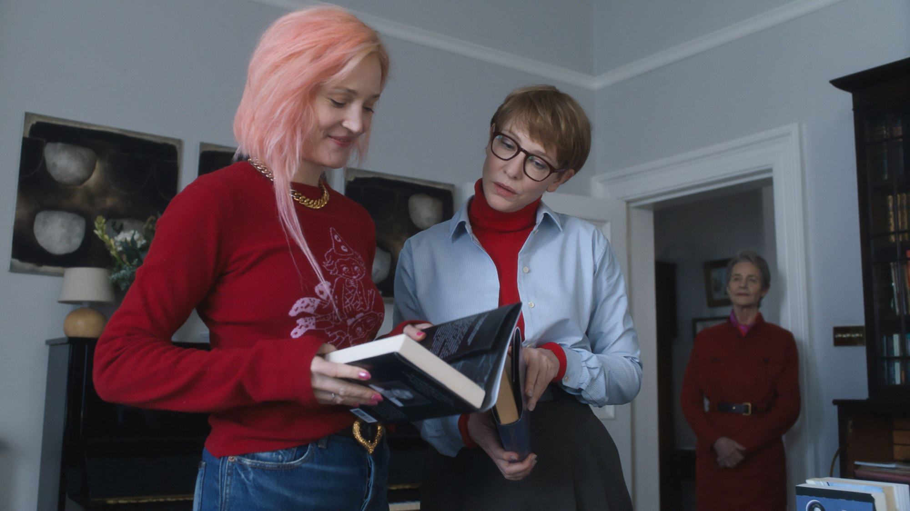
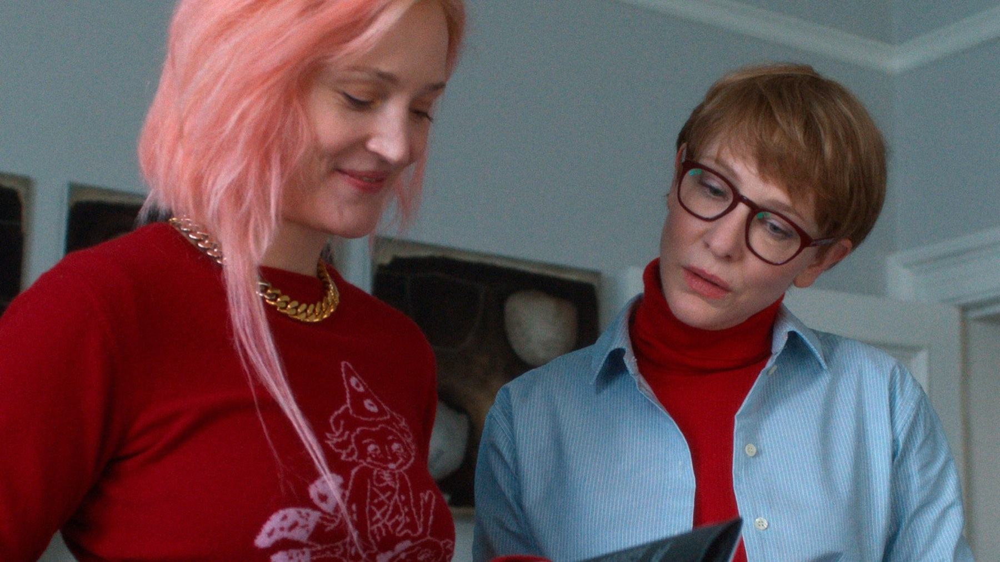
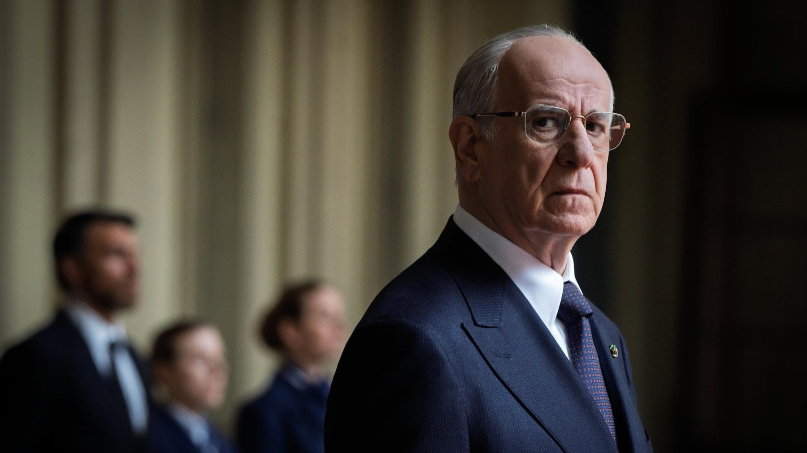

Venezia 2025: tutti i premi, da Jarmusch a Servillo
Il film a episodi di Jim Jarmusch conquista l'82ª Mostra, Toni Servillo è il miglior attore per La grazia di Sorrentino, Gianfranco Rosi porta a casa il Premio speciale: il palmarès commentato
Si è chiusa il 6 settembre 2025 l'82ª Mostra internazionale d'arte cinematografica di Venezia, aperta il 27 agosto da La grazia di Paolo Sorrentino. Una giuria presieduta dal regista americano Alexander Payne ha scelto un vincitore che pochi davano per favorito, un film piccolo e ironico firmato da uno dei grandi autori indipendenti americani. E per l'Italia è stata un'edizione da ricordare.
Chi ha vinto il Leone d'oro?
Il premio più importante è andato a Father Mother Sister Brother, diretto da Jim Jarmusch e coprodotto da Stati Uniti, Irlanda e Francia. È un film costruito per episodi, tre storie di famiglie e di rapporti tra genitori e figli adulti, con un cast che da solo vale il biglietto: Tom Waits, Adam Driver, Mayim Bialik, Charlotte Rampling, Cate Blanchett e Vicky Krieps.
È il primo Leone d'oro per Jarmusch, autore di film come Daunbailò, Dead Man e Paterson, e premia un cinema fatto di sguardi, silenzi e ironia sottile. Nel discorso di ringraziamento il regista ha parlato dell'empatia come primo strumento per affrontare i problemi del presente.

Gli altri premi principali
Il secondo riconoscimento per importanza, il Gran premio della giuria, ha premiato The Voice of Hind Rajab della regista tunisina Kaouther Ben Hania, dedicato alla storia di Hind Rajab, una bambina palestinese uccisa a Gaza: uno dei film che hanno segnato di più il clima della Mostra. Benny Safdie ha ricevuto il premio per la miglior regia con The Smashing Machine.
Tra le attrici, la Coppa Volpi ha premiato la cinese Xin Zhilei, protagonista di The Sun Rises on Us All. Il premio per la sceneggiatura è stato assegnato a Valérie Donzelli e Gilles Marchand per At Work, mentre il Premio Marcello Mastroianni per un giovane interprete è andato a Luna Wedler per Silent Friend di Ildikó Enyedi, film che a Venezia ha vinto anche il premio della critica internazionale FIPRESCI.
L'Italia: Servillo, Rosi e Porcaroli
Per il cinema italiano è stata una Mostra generosa. Toni Servillo si è aggiudicato la Coppa Volpi maschile grazie a La grazia, il film con cui Paolo Sorrentino ha aperto il festival: interpreta un presidente della Repubblica anziano e a fine mandato, chiamato a due decisioni difficili, una domanda di grazia e una legge sull'eutanasia. È l'ennesimo capitolo di un sodalizio che ha già dato al cinema italiano titoli come Il divo e La grande bellezza.

Gianfranco Rosi, già Leone d'oro nel 2013 con Sacro GRA, ha ricevuto il Premio speciale della giuria per Sotto le nuvole. Nella sezione Orizzonti, infine, il riconoscimento per la miglior interpretazione femminile è andato a Benedetta Porcaroli, protagonista del film di Carolina Cavalli Il rapimento di Arabella.
Orizzonti, opere prime e premi alla carriera
Il premio per il miglior film di Orizzonti è andato al messicano On the Road di David Pablos, mentre il Leone del futuro per la migliore opera prima è stato assegnato a Short Summer di Nastia Korkia. I Leoni d'oro alla carriera di questa edizione sono andati a Werner Herzog e a Kim Novak, due figure lontanissime tra loro e unite da una carriera lunga oltre sessant'anni.
Un Leone a sorpresa, e un'Italia che torna a casa con le mani piene.
Un palmarès che ha diviso
Come spesso accade a Venezia, la scelta del Leone d'oro ha fatto discutere: per alcuni critici premiare un film intimo e lieve come quello di Jarmusch è stata un'occasione persa per un'edizione segnata da opere molto legate all'attualità. Per altri è proprio la forza della giuria di Payne aver scelto un cinema che parla di relazioni umane. Le due letture convivono, ed è il segno di una Mostra ricca e varia.
Un'edizione forte e piena di titoli importanti, con un Leone d'oro discreto ma coerente e un'Italia protagonista come non succedeva da tempo. Molti dei film premiati sono arrivati nelle sale nei mesi successivi: vale la pena recuperarli.
Domande frequenti
Chi ha vinto il Leone d'oro a Venezia 2025?
Father Mother Sister Brother, diretto da Jim Jarmusch: un film a episodi con Tom Waits, Adam Driver, Charlotte Rampling, Cate Blanchett e Vicky Krieps.
Chi ha vinto la Coppa Volpi a Venezia 2025?
Tra gli attori Toni Servillo per La grazia di Paolo Sorrentino; tra le attrici la cinese Xin Zhilei per The Sun Rises on Us All.
Quali premi ha vinto l'Italia a Venezia 2025?
Toni Servillo ha conquistato la Coppa Volpi maschile, Sotto le nuvole di Gianfranco Rosi il Premio speciale della giuria e, nella sezione Orizzonti, Benedetta Porcaroli il riconoscimento per l'interpretazione femminile con Il rapimento di Arabella.